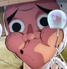

.webp)
Home
◇ ◦ • ◦ • There is no release date yet • ◦ • ◦ ◇
WELCOME TO THE KIMETSU NO YAIBA WIKI!
Heavy spoilers ahead, read with caution! Please see our Rules & Policies here.
This is a wiki about Kimetsu no Yaiba that was created by the fans, for the fans, and is dedicated to housing a useful and informative database for all subject matter related to Koyoharu Gotoge's series Kimetsu no Yaiba. Anyone can edit! We encourage users to help improve this wiki even more. Check out the above links to get an idea of how wiki editing works. Please read our Policies here.
| 806articles | 5,912files | 133,770edits | 104editor(s) |
|
Warning: This Wiki Contains Spoilers! Please Read At Your Own Risk. |
STORY
Read More ▶
CHARACTERS
| Tanjiro | Nezuko |
 Mitsuri
Mitsuri
|
Muichiro |
 Genya
Genya
|
 Kotetsu
Kotetsu
|
 Hotaru | Kozo | Tecchin | Yoriichi |
| Hantengu | Gyokko | Sumiyoshi | Muzan | Kanao |
| Zenitsu | Inosuke | Giyu | Shinobu | Oyakata-sama |
| Tanjiro | Nezuko | Zenitsu | Inosuke |
 Kanao
Kanao
|
| Giyu | Mitsuri | Obanai | Sanemi | Gyomei |
| Muzan | Yoriichi |
 Nakime
Nakime
|
Tamayo | Yushiro |
| Kanata | Sumihiko | Toko | Yoshiteru | Aoba |
UPCOMING RELEASES
A new anime project has been announced! Further details to be added upon release.
The final episode of Season 3, Episode 55, has been released in English.
until the release of Swordsmith Village Arc: Volume 6 of the Blu-ray & DVD!.
POLL
Almost three quarters of voters (73.03%, 574/786) were most excited to see more of the Flame Hashira, Kyojuro Rengoku!
This one was a lot more divided (34.25%, 236/689), but most fans' top pick is Giyu Tomioka, our beloved (and definitely not friendless) Water Hashira!
Unsurprisingly for many fans, Upper Rank Three, Akaza, swept the floor with the rest of the competition, scoring more votes than all of them combined (53.1%, 283/533)!
AFFILIATES
.webp)
.webp)
.webp)
.webp)
.webp)
GETTING STARTED
Our wiki is under construction and expanding. With your help, we can develop its contents for the better.
Anonymous editing is disabled on the wiki. To contribute, you must login or sign up for an account. You can get started by editing typos, work on stubs or leave feedback on talk pages.
If you need help, please refer to the Help pages, FANDOM University or ask an Admin.
Check out these projects to see which areas of the wiki are in need of help:
- Stubs are articles that have little to no content and need to be expanded. Help make stubs into articles by adding more information.